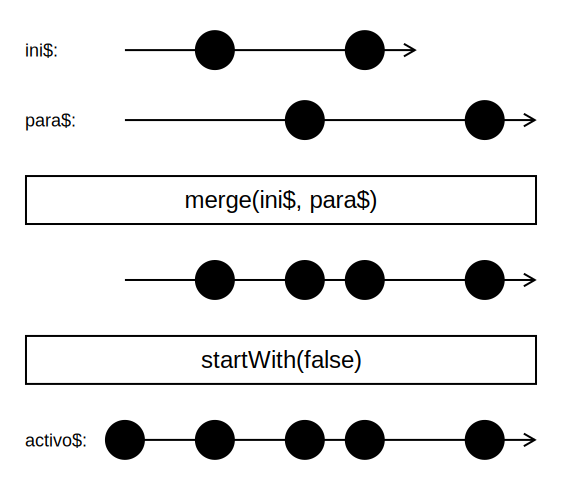

Introducción a la programación reactiva con RxJS
Programación Declarativa Aplicada
Máster en Ingeniería Informática
Facultad de Informática
Universidad Complutense de Madrid
Máster en Ingeniería Informática
Facultad de Informática
Universidad Complutense de Madrid
Ejemplo
Comenzamos con la siguiente página HTML:
index.html
<!DOCTYPE html>
<html>
<head>
<title>Captura de eventos</title>
<link rel="stylesheet" href="index.css"/>
</head>
<body>
<div id="areaClicks"></div>
<script src="main.js"></script>
</body>
</html>
index.css
#areaClicks {
width: 600px;
height: 300px;
background-color: lightblue;
}

Ejemplo
- Ya en JavaScript, obtenemos una referencia al elemento DOM correspondiente al área sombreada
<div>de la página:const area = document.getElementById('areaClicks');
Detección de pulsaciones
- Construimos un observable a partir de las pulsaciones de ratón realizadas sobre el área sombreada:
import { fromEvent } from 'rxjs'; const area = document.getElementById('areaClicks'); const click$ = fromEvent(area, 'click'); - Por convenio, los nombres de las variables que contienen observables finalizan en
$.
El método fromEvent
fromEvent(e, type)
Construye un observable a partir de los eventos de tipotypeque se producen en el elementoede la página.- Cada elemento del observable creado es un objeto de la interfaz
Eventde JavaScript.
Suscripción a un observable
- Mediante el método
subscribe()de los observables, podemos indicar las acciones a realizar cada vez que se produce un evento enclick$:click$.subscribe((click) => console.log('Click! ', click)); - La función pasada a
subscribe()recibe el objetoMouseEventcorrespondiente a cada pulsación.
Operadores RxJS
- Permiten transformar un observable en otro.
- Son operaciones puras: generan un nuevo observable sin alterar el original
- Para aplicar una secuencia de operadores a un observable se utiliza el método
pipe():const destino$ = origen$.pipe( operacion1(), operacion2(), ... )
Operadores RxJS
El operador map
- Produce un observable aplicando una función a cada elemento del observable original.
Ejemplo
- Obtenemos un observable con las coordenadas cada pulsación del ratón:
import { fromEvent, map } from 'rxjs'; ... const click$ = fromEvent(area, 'click').pipe( map(evt => ({x: evt.offsetX, y: evt.offsetY})) ); click$.subscribe(({x, y}) => console.log(`Click en (${x},${y})`));
Ejemplo

El operador filter
- Produce un observable a partir de los eventos de otro, para los que la función booleana pasada como parámetro devuelve true.

Ejemplo
- Supongamos que solo queremos informar de las pulsaciones de ratón que se producen en la mitad izquierda del área sombreada:
import { fromEvent, map, filter } from 'rxjs'; ... const click$ = fromEvent(area, 'click').pipe( map(evt => ({x: evt.offsetX, y: evt.offsetY})), filter(({x, y}) => x < area.clientWidth / 2) ); click$.subscribe(({x, y}) => console.log(`Click en (${x},${y})`));
El operador take
- Aplicado a un número
n, produce un observable con losnprimeros valores del observable inicial.
Ejemplo
- Modificamos el ejemplo anterior para capturar solamente las diez primeras pulsaciones del ratón.
import { fromEvent, map, filter, take } from 'rxjs';
...
const click$ = fromEvent(area, 'click').pipe(
map(evt => ({x: evt.offsetX, y: evt.offsetY})),
filter(({x, y}) => x < area.clientWidth / 2),
take(10)
);
click$.subscribe(({x, y}) => console.log(`Click en (${x},${y})`));
El operador reduce
- Similar a la función
reducede JavaScript. - Mantiene un acumulador que se actualiza a medida que el observable origen produce valores.
- Cuando el observable origen finaliza, se emite el valor final del acumulador.
El operador scan
- Similar a
reduce, pero el observable resultante emite los valores intermedios del acumulador.

Ejemplo
- Supongamos que queremos contar el número de pulsaciones de ratón sobre el área sombreada:
import { fromEvent, map, filter, take, scan } from 'rxjs'; ... const click$ = fromEvent(area, 'click'); const cont$ = click$.pipe(scan((ac, _) => ac + 1, 0)); cont$.subscribe(cont => console.log(`Contador: ${cont}`));
El operador zip
- Combina varios observables en uno solo.
- Cada valor del resultado es una agrupación formada a partir de los valores emitidos por cada observable.
Ejemplo
- Combinamos los dos observables anteriores:
coord$: coordenadas de cada pulsacióncont$: número de pulsaciones
Ejemplo
import { fromEvent, map, filter, take, scan, zip } from 'rxjs';
const area = document.getElementById('areaClicks');
const coord$ = fromEvent(area, 'click').pipe(
map(evt => ({x: evt.offsetX, y: evt.offsetY})),
filter(({x, y}) => x < area.clientWidth / 2)
);
const cont$ = coord$.pipe(scan((ac, _) => ac + 1, 0));
zip(coord$, cont$)
.pipe(take(10))
.subscribe(([{x, y}, cont]) => {
console.log(`Pulsación en (${x}, ${y}) / contador = ${cont}`);
});
Lectura de ficheros mediante observables
- Es posible utilizar observables para gestionar otros tipos de eventos, no necesariamente relacionados con las interfaces gráficas de usuario.
- Por ejemplo, podemos implementar una función
fromFile(filename)que devuelva un observable con las líneas del ficherofileName. - De momento, solamente veremos cómo utilizar
fromFile. Su implementación se explicará más adelante.
Ejemplo
- Supongamos que
ej1.txttiene el siguiente contenido:L1 L2 L3 - La llamada a
fromFile("ej1.txt")devuelve el siguiente observable, que emite valores a medida que se leen las líneas del fichero:
Ejemplo
- Podemos utilizar este observable, por ejemplo, para leer el número de líneas del fichero:
fromFile('ejemplo1.txt') .pipe(reduce((ac, _) => ac + 1, 0)) .subscribe(numL => console.log(`Número de líneas: ${numL}`));
Creación de observables: of y from
of(x1,...,xn)produce un observable que emite los valores pasados como parámetro:from(xs)produce un observable a partir de los elementos de un array, un objeto iterable, o una promesa:
Observables de observables
- Es posible definir observables cuyos eventos producidos son también observables.
- Por ejemplo:
of('F1.txt', 'F2.txt', 'F3.txt').pipe(map(f => fromFile(f)))
Observables de orden superior
- Un observable de orden superior es aquel cuyos elementos son también observables.
- Existen operadores que transforman observables de orden superior en observables de primer orden.
Operador concatAll()
- Concatena los valores de un observable de orden superior, comenzando con los del primer observable, luego los del segundo, etc.
Operador mergeAll()
- Concatena los valores de un observable de orden superior, mezclando los valores a medida que se van produciendo por cada observable.
Operadores concatMap y mergeMap
- Combinan el operador
mapcon los dos anteriores:concatMap(f) = map(f) + concatAll()mergeMap(f) = map(f) + mergeAll()
- Por ejemplo, si queremos sumar de la cantidad total de líneas de una serie de ficheros:
of('ejemplo1.txt', 'ejemplo2.txt', 'ejemplo3.txt').pipe( mergeMap(f => fromFile(f)), reduce((ac, _) => ac + 1, 0) ).subscribe(numL => console.log(numL));
Ejemplo
Partimos del siguiente documento HTML:
<!DOCTYPE html>
<html>
<head>
<title>Contador</title>
<meta charset="utf8">
</head>
<body>
<h1>Contador: <span id="contador">##</span></h1>
<button id="iniciar">Iniciar</button>
<button id="parar">Parar</button>
<script src="main.js"></script>
</body>
</html>
El operador interval
- Recibe una cantidad de tiempo
ty devuelve un observable que emite un evento cadatmilisegundos. - El valor emitido es un contador que se incrementa, pero no lo utilizaremos en este ejemplo.
Ejemplo
const contador$ = interval(1000).pipe(
scan(ac => ac + 1, 0)
);
contador$.subscribe(c => textoContador.innerText = `${c}`);
El operador startWith
- Dado un observable, produce otro igual, pero añadiendo un evento al inicio.
Ejemplo
const contador$ = interval(1000)
.pipe(
scan(ac => ac + 1, 0),
startWith(0)
);
Inicio y parada del contador
- Creamos un observable para cada botón:
- El botón Iniciar emite valores
true. - El botón Parar emite valores
false.
const ini$ = fromEvent(botonIniciar, 'click').pipe(map(() => true)); const fin$ = fromEvent(botonParar, 'click').pipe(map(() => false)); - El botón Iniciar emite valores
- Mezclando ambos, obtenemos un observable que nos dice si el incremento está activo o inactivo:
const activo$ = merge(ini$, fin$).pipe(startWith(false));
El operador merge()

Habilitar y deshabilitar botones
- Cada vez que se emite un evento en
activo$, podemos actualizar la interfaz para habilitar y deshabilitar los botones:activo$.subscribe(act => { botonIniciar.disabled = act; botonParar.disabled = !act; });
¿Cuándo incrementar el contador?
const contador$ = interval(1000)
.pipe(
scan(ac => ac + 1, 0),
startWith(0)
);
- De momento, nuestro contador se incrementa con cada evento
interval. - En realidad solo hemos de incrementarlo si, en el momento de producirse el evento, el último valor emitido por el observable
activo$estrue.
Operador withLatestFrom
- Dado dos observables
o1yo2, produce cada uno de los valores emitidos poro1asociado al último valor emitido poro2en ese momento:
Ejemplo
- En nuestro caso, queremos combinar los valores del observable producido por
intervalcon los últimos valores emitidos por el observableactivo$.
Ejemplo
- Una vez hecha esta combinación, modificamos la función pasada a
scanpara que solo incremente el contador si el último valor emitido poractivo$estrue:
const contador$ = interval(1000).pipe(
withLatestFrom(activo$),
scan((ac, [_, activo]) => activo ? ac + 1 : ac, 0),
startWith(0)
);
Contador con reinicio
<!DOCTYPE html>
<html>
<head>
<title>Contador</title>
<meta charset="utf8">
</head>
<body>
<h1>Contador: <span id="contador">0</span></h1>
<button id="reiniciar">Reiniciar</button>
<script src="main.js"></script>
</body>
</html>
El operador takeUntil
- Dados dos observables
o1yo2, devuelve un observable que emite los mismos valores deo1, pero solo hasta queo2emite su primer evento.
Ejemplo
- Creamos una función
contadorHastaque emite un observable con un contador que se incrementa cada segundo hasta que el observable pasado como parámetro emita un evento:
function contadorHasta(parada$) {
return interval(1000).pipe(
takeUntil(parada$),
scan(ac => ac + 1, 0),
startWith(0)
)
}
Ejemplo
Contador con reinicio
- Si
reini$es el observable que representa las pulsaciones del botón Reiniciar, podemos transformar cada pulsación en un observable que representa la evolución del contador:
const contador$ = reini$.pipe(
map(() => contadorHasta(reini$)),
concatAll()
) // También podría haberse utilizado concatMap
Contador con reinicio
Contador con reinicio
- Para hacer que el contador se inicie automáticamente, añadimos un valor ficticio al principio de nuestro observable
reini$:
const contador$ = reini$.pipe(
startWith(true), // Cualquier otro valor distinto de 'true' sirve,
// porque no lo utilizamos en el 'map'
map(() => contadorHasta(reini$)),
concatAll()
)
const contador$ = reini$.pipe(
startWith(true),
concatMap(() => contadorHasta(reini$)),
)